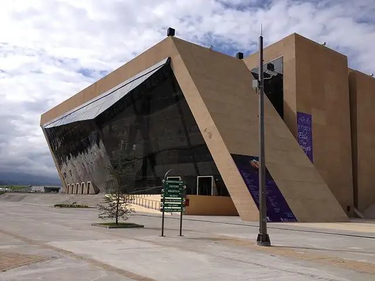
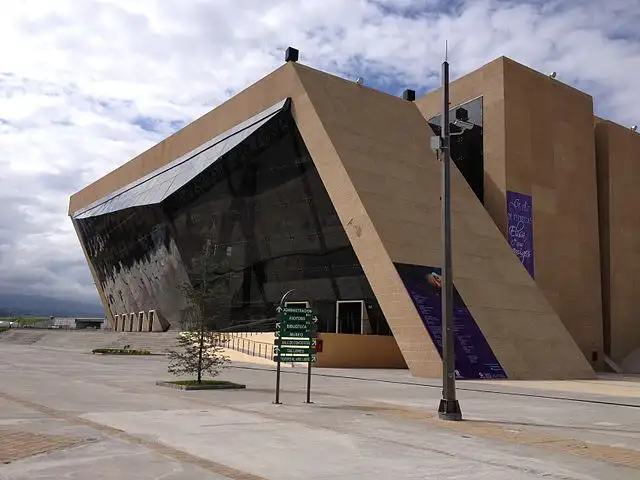

About Texcoco
In 2020, the population in Texcoco was 277,562 inhabitants (48.6% men and 51.4% women). Compared to 2010, the population in Texcoco increased by 18%.
International Sales in 2023
International sales of Texcoco in 2023 were US$83.8M, 131% more than the previous year. The products with the highest level of international sales in 2023 were Other Vegetables, Fresh or Chilled(US$2.47M), Fittings and Similar Articles of Base Metal, for Furniture, Doors, Windows, Saddlery, Chests and other Articles of this Class (US$119k), and Machinery and Mechanical Appliances Having Individual Functions, not Specified Elsewhere (US$54.5k).
Chapingo Autonomous University
Chapingo Autonomous University (Universidad Autónoma Chapingo, UACH) is a prominent institution in Mexico, known for its focus on agricultural sciences and rural development. Founded in 1854, it is located in Texcoco, State of Mexico. The university offers a range of undergraduate and graduate programs, emphasizing sustainable agricultural practices, forestry, and environmental studies. UACH plays a significant role in research and education aimed at improving agricultural productivity and rural livelihoods in Mexico and beyond. Its unique approach integrates scientific research with practical applications, making it a key player in agricultural innovation.
Attractions at Chapingo Autonomous University:
- Botanical Garden: A large garden featuring diverse plant species, ideal for leisurely walks and learning about native flora.
- Historic Architecture: The campus includes several historic buildings with unique architectural styles, showcasing its cultural significance.
- Museums: The university has museums focused on agricultural history, rural development, and the environment, providing valuable educational insights.
- Cultural Events: UACH hosts various cultural events, conferences, and exhibitions that celebrate Mexican traditions and the agricultural sector.
- Natural Surroundings: The university is set in picturesque landscapes, making it great for nature walks and outdoor activities.
- Diego Rivera Murals: Notable murals by Diego Rivera, including "The Flower Carrier," are featured on campus, highlighting themes of agriculture and social justice.
 
